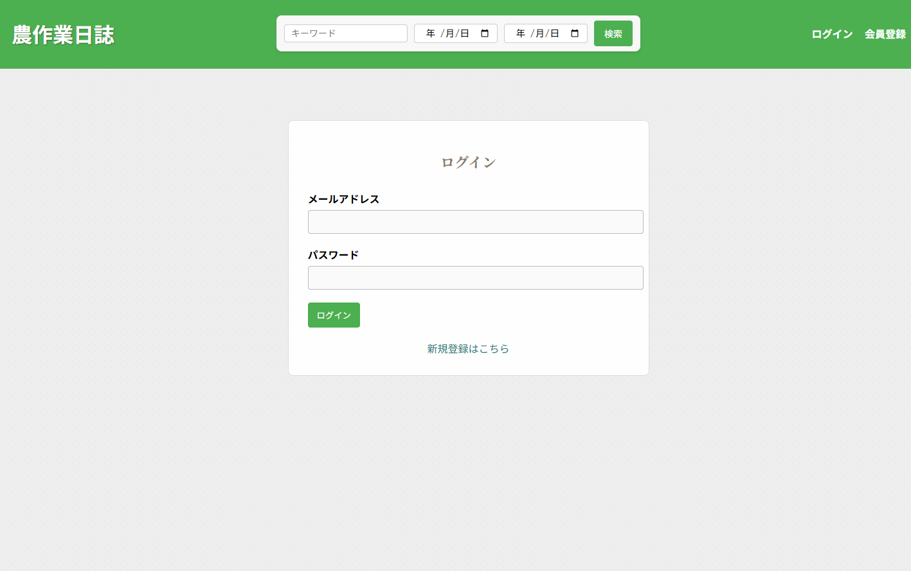
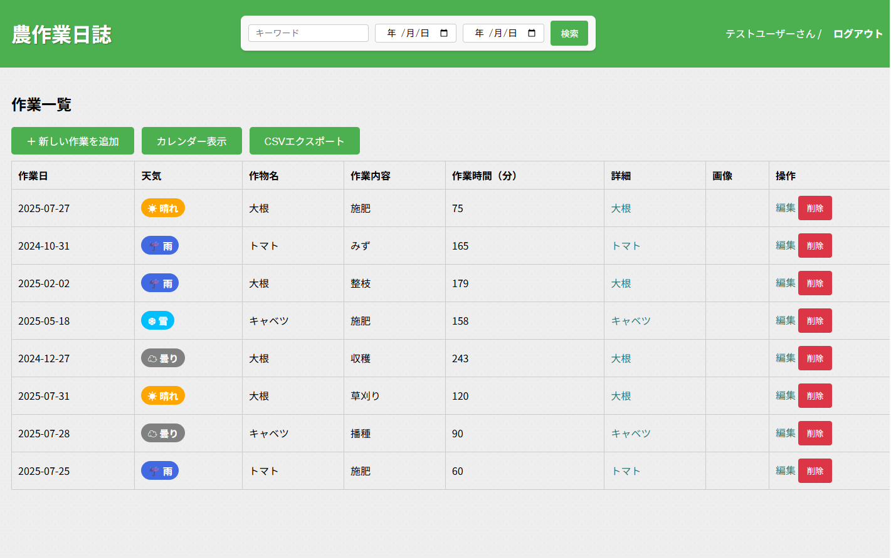
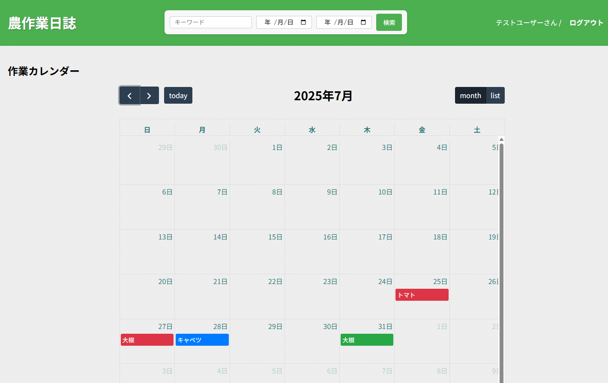
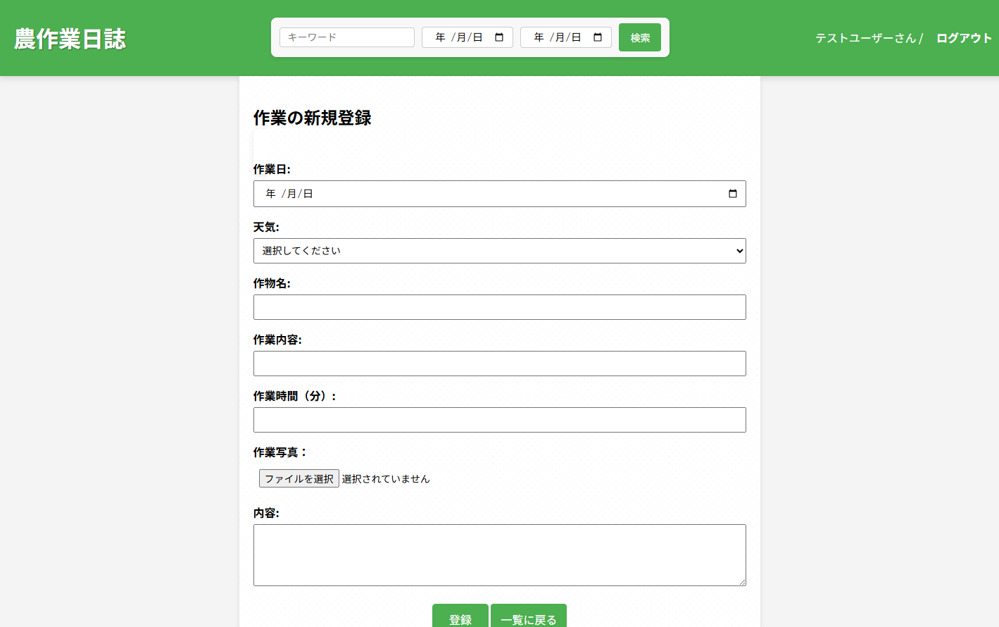

農作業日誌アプリ
個人農家向けに開発した作業記録アプリです。作業日誌を登録し、検索やカレンダー表示、CSV出力で 活用できるようにしています。認証機能を備えたWebアプリとして、業務効率化を目的に開発しました。
主な機能
- ユーザー認証（Laravel Fortify使用）
- 作業日誌の登録・編集・削除
- キーワード検索・年月絞り込み
- カレンダー表示
- CSVエクスポート
画面イメージ




使用技術
Laravel 8 / PHP / MySQL / Docker / CSS
リンク
※現在はGitHubにて公開済み。今後、独自ドメイン agrilinker.site へ移行予定です。